海青茶韵IP形象
以嫩芽、茶叶和清新的绿色为核心视觉，让抽象的茶文化拥有更亲近、更年轻的角色表达。
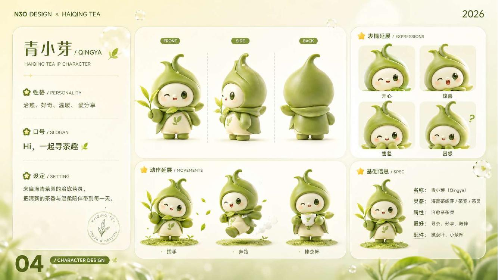
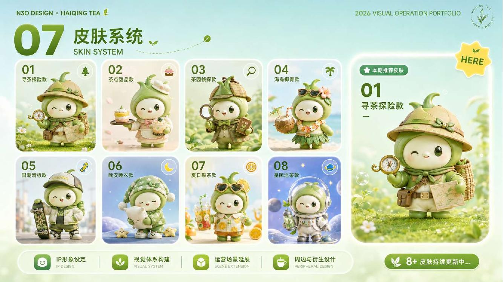
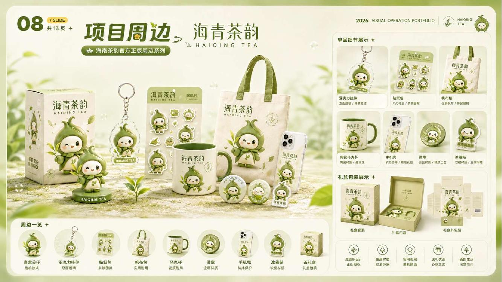
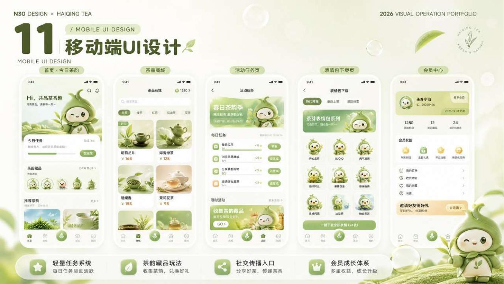
VISUAL ARCHIVE · HAIQING TEA
这里按四类成果组织，不再全部堆在首页。点击分类即可切换查看IP、团队识别、文创物料和现场应用。
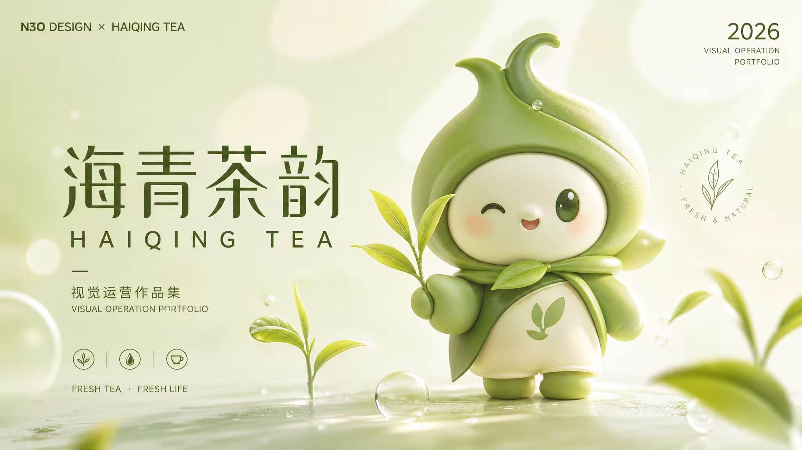
SELECT A CATEGORY
保留原始作品本身，不重新改动队旗、队服、团扇和手举牌设计；网页只负责更清楚地分类与展示。
以嫩芽、茶叶和清新的绿色为核心视觉，让抽象的茶文化拥有更亲近、更年轻的角色表达。




队旗与队服共同形成清晰的团队识别，让每一次走访、拍摄和活动都能被准确辨认。
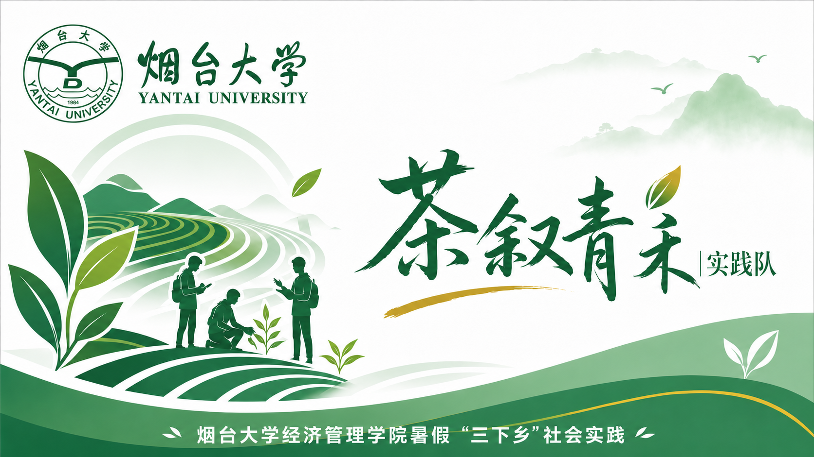
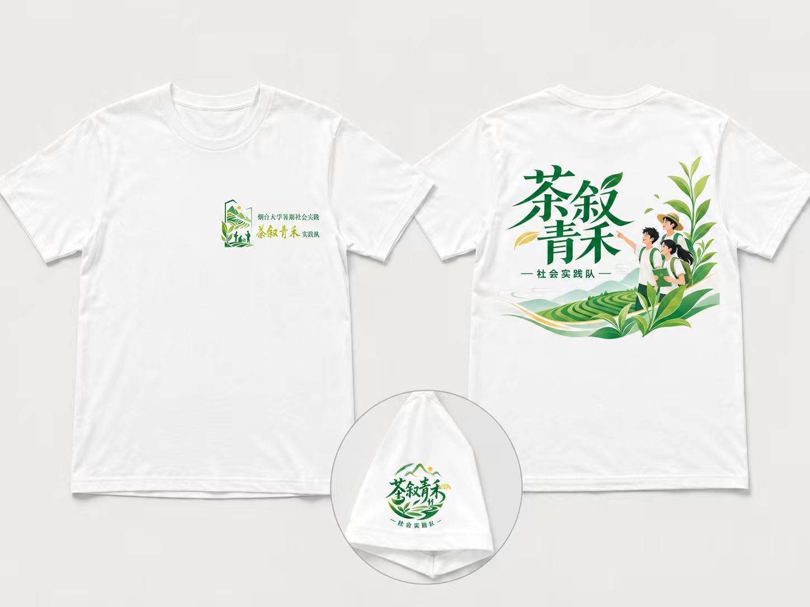
团扇承担知识传播，手举牌强化现场互动。原设计中的二维码仅作为作品画面保留，不作为本网站的跳转入口。
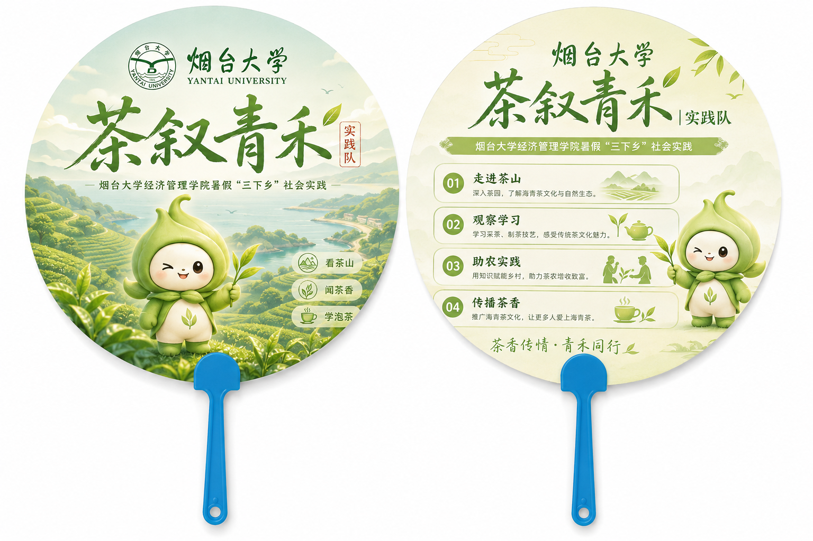
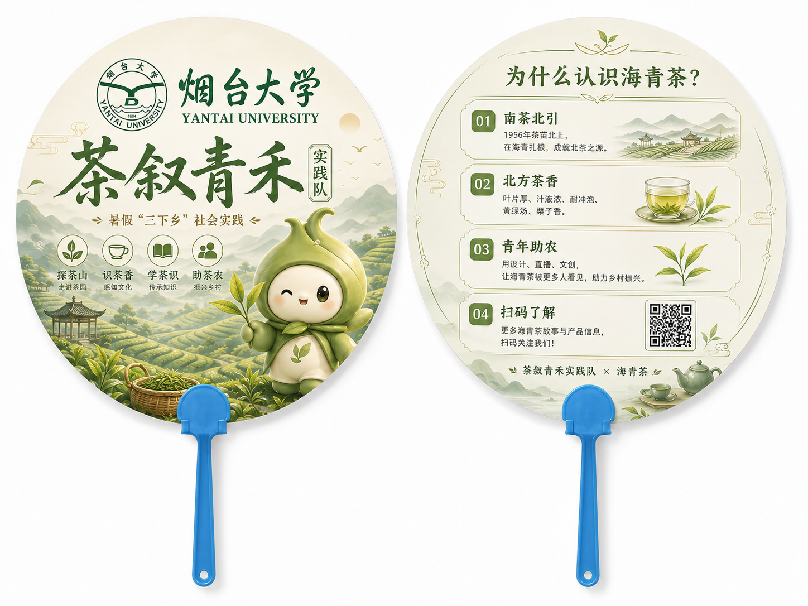
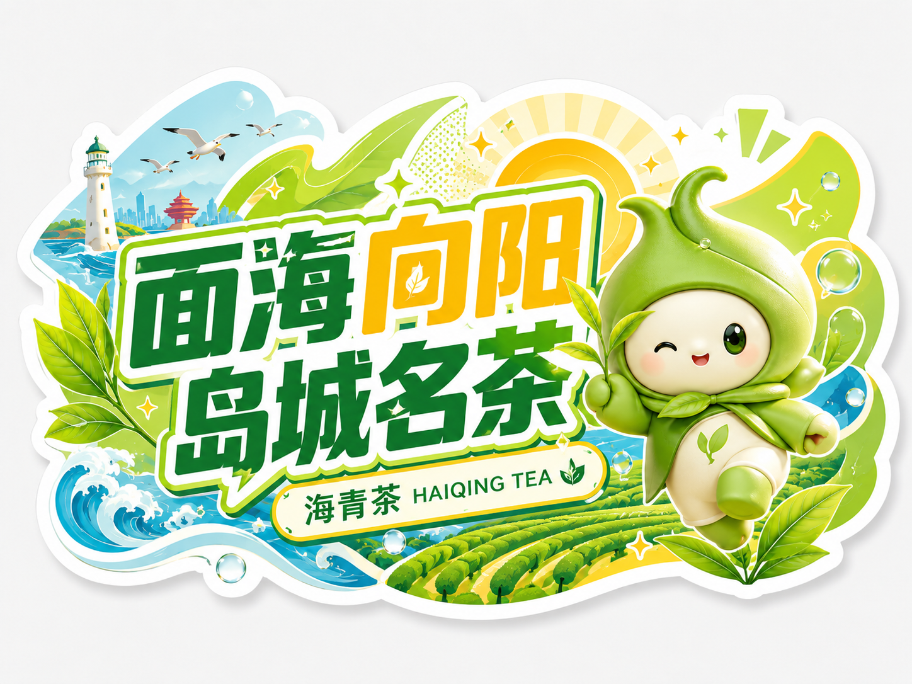
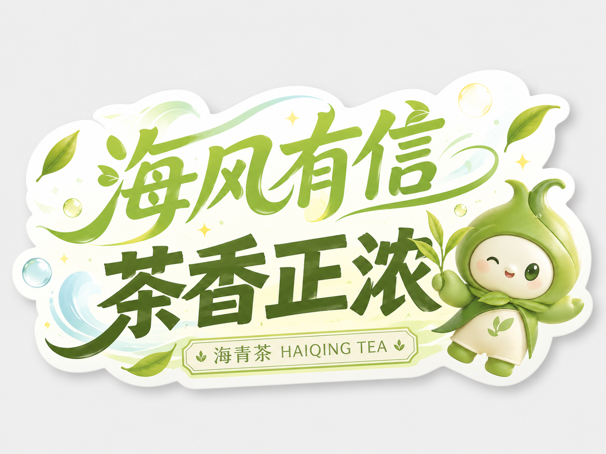
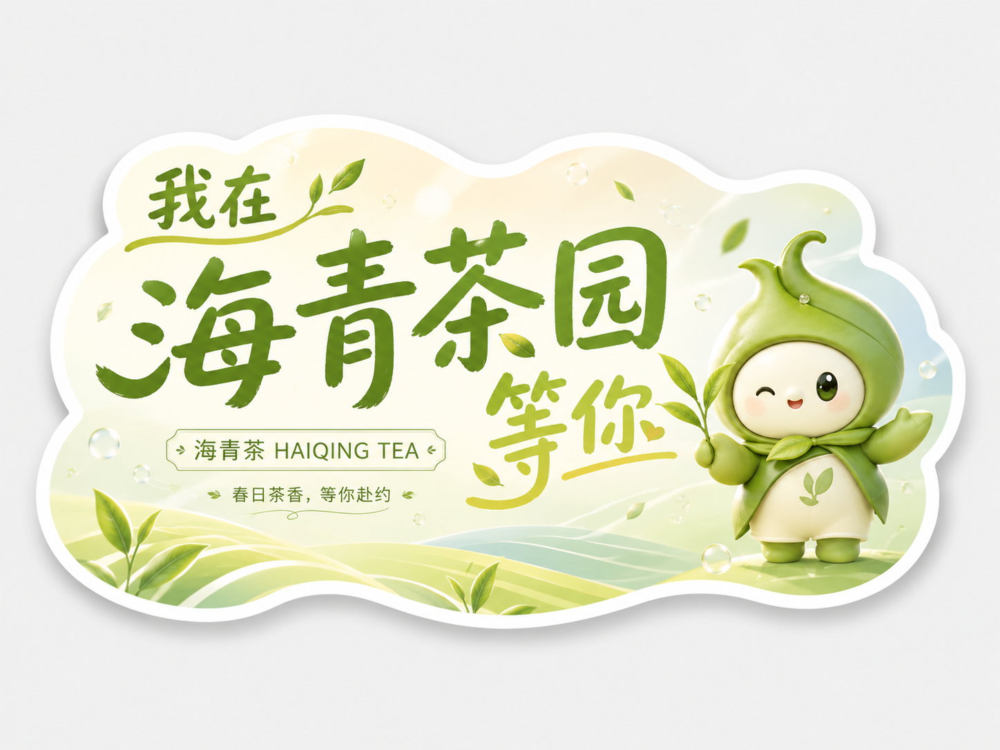
物料不只停留在效果图中。队服、队旗和手举牌被带入海青茶园，参与现场记录与公众传播。
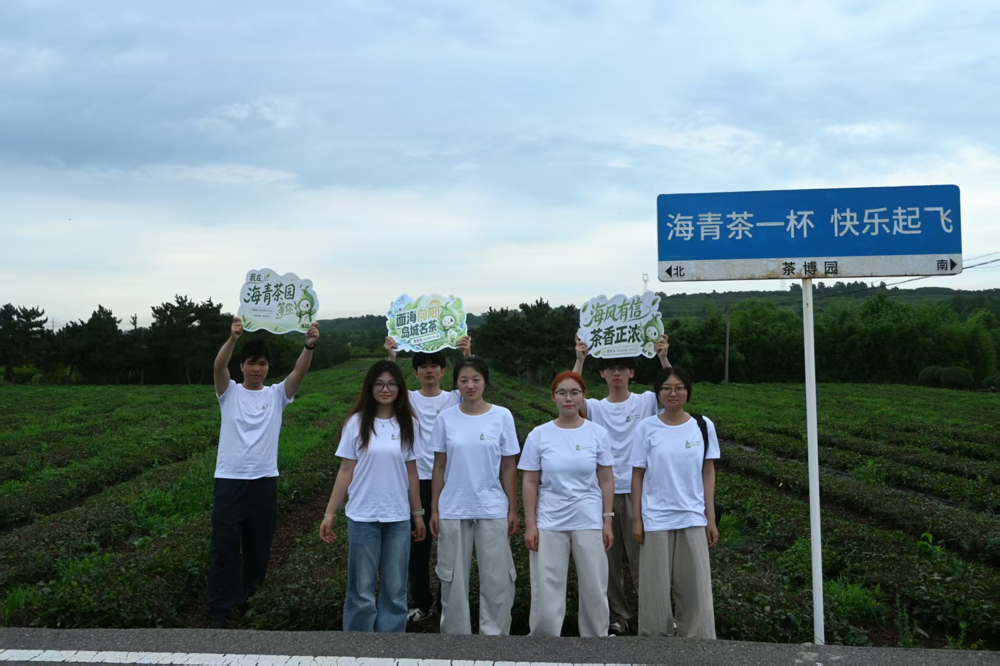

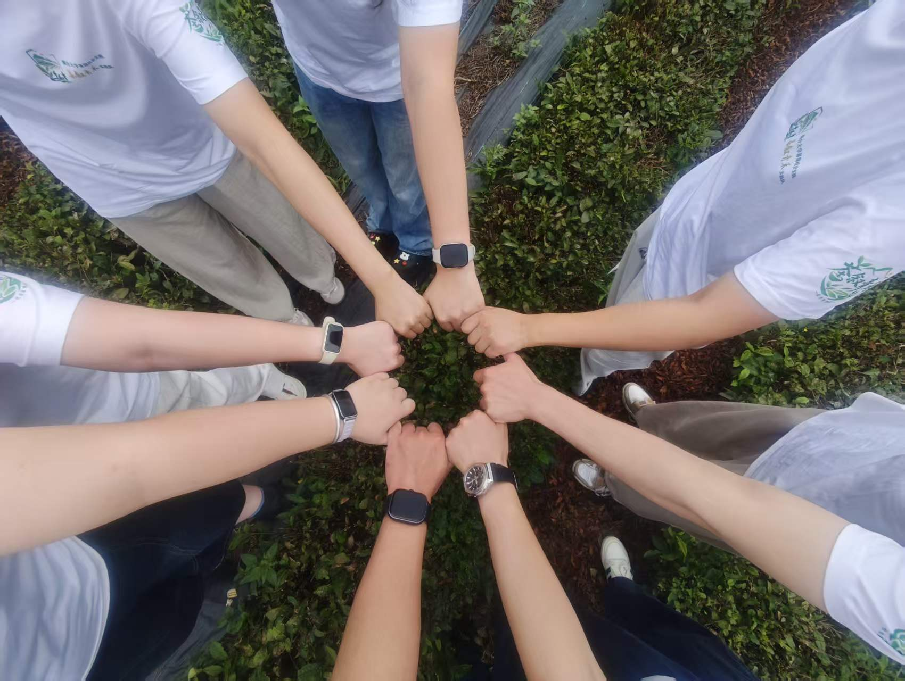